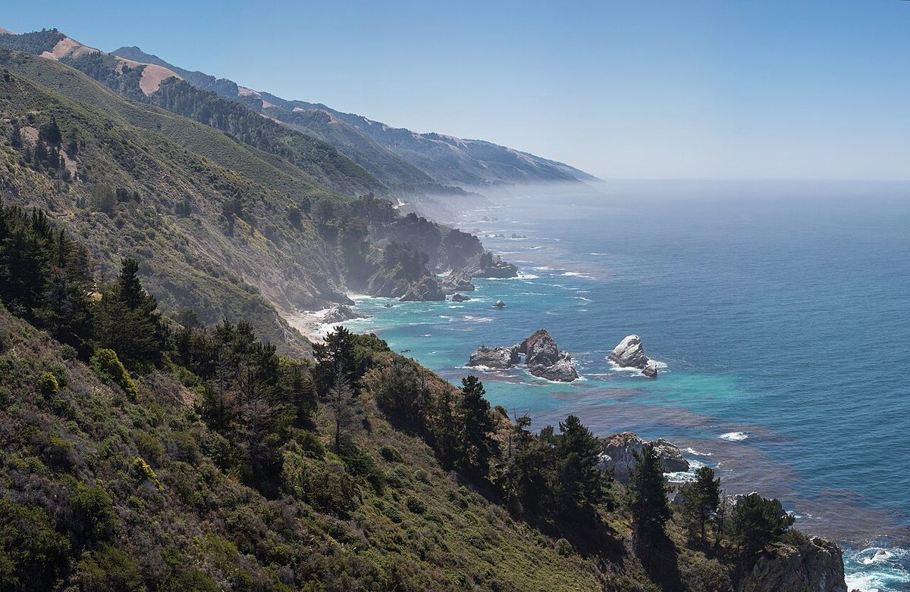
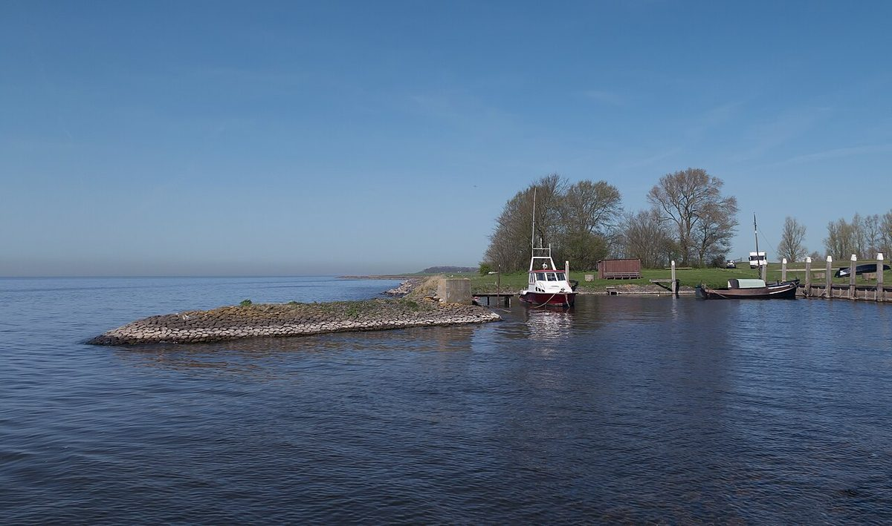

ジャイ珈琲
カフェ(珈琲) / 香川県東かがわ市
香川県東かがわ市のカフェ「ジャイ珈琲」のご案内ページです。営業時間やメニューなど詳しいことは準備中。まずはInstagramをのぞいてみてください。

制作側の連想
「ジャイ」から、カケスの羽根を思いました
店名の由来は分かりません。制作側は「ジャイ」という響きから、英語で鳥のカケス(jay)を連想しました。カケスの翼には、青・黒・白の細かい縞があるそうです。このページは、その縞を模様に使い、青い空や海の写真を「羽根の一枚」として並べています。制作側の連想で、お店の理念・由来とは無関係です。
羽根の縞
青の濃さを、五枚。
写真は東かがわ市の風景ではありません。青の濃淡で選んだ、国外・撮影地不明のフリー素材です。
- 一

撮影地不明のイメージ - 二

国外のイメージ(米国) - 三

国外のイメージ(オランダ) - 四

国外のイメージ(米国) - 五

国外のイメージ(インドネシア)